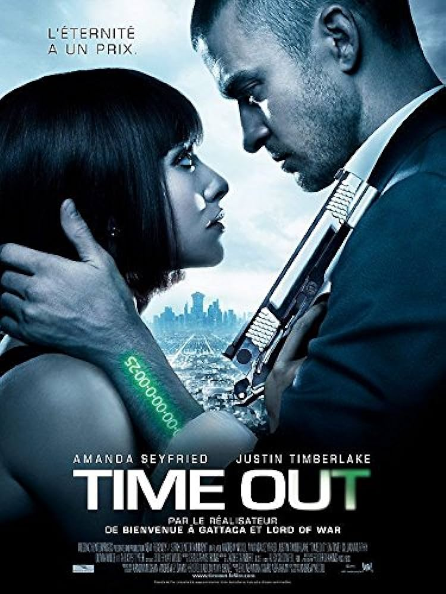

Programmation
Action
- The Covenant
- Fury
- Edge Of Tomorrow
- Hacksaw Ridge
- Taken
- The Equalizer
Lorsque son unité est attaquée par des combattants talibans au cours de la recherche d'un dépôt de munitions, le sergent de l'US Army, John Kinley est gravement blessé. Les talibans à leurs trousses, l'interprète afghan Ahmed risque sa propre vie pour le transporter, en terrain hostile, afin de le sauver.Le voyage des deux hommes ne fait que commencer.
Avril 1945. Pendant la dernière phase d'invasion des alliés en sol européen, un sergent endurci surnommé "Wardaddy" se retrouve à la tête d'un équipage de tank Sherman composé de cinq hommes, chargé d'une périlleuse mission derrière les lignes ennemies. Moins nombreux et moins armés que l'adversaire, en plus de compter une recrue parmi eux, "Wardaddy" et ses hommes devront composer avec l'impossible pour réussir leur attaque au coeur de l'Allemagne nazie.
 Dans un futur
proche,
des hordes d'extraterrestres ont livré une bataille acharnée contre la Terre et semblent
désormais
invincibles : aucune armée au monde n'a réussi à les vaincre. Le commandant William Cage,
qui
n'a
jamais combattu de sa vie, est envoyé, sans la moindre explication, dans ce qui ressemble à
une
mission-suicide. Il meurt en l'espace de quelques minutes et se retrouve projeté dans une
boucle
temporelle, condamné à revivre le même combat et à mourir de nouveau indéfiniment.
Dans un futur
proche,
des hordes d'extraterrestres ont livré une bataille acharnée contre la Terre et semblent
désormais
invincibles : aucune armée au monde n'a réussi à les vaincre. Le commandant William Cage,
qui
n'a
jamais combattu de sa vie, est envoyé, sans la moindre explication, dans ce qui ressemble à
une
mission-suicide. Il meurt en l'espace de quelques minutes et se retrouve projeté dans une
boucle
temporelle, condamné à revivre le même combat et à mourir de nouveau indéfiniment.
 Desmond
Doss adventiste, fils d'un vétéran de la 1re Guerre mondiale, s'engage comme infirmier
objecteur
de
conscience lorsqu'éclate la guerre du Pacifique en 1942, il ne portera donc pas les armes.
Et il
sauvera 75 blessés lors d'une sanglante bataille pour la prise de “La crête en dents de
scie”.
Desmond
Doss adventiste, fils d'un vétéran de la 1re Guerre mondiale, s'engage comme infirmier
objecteur
de
conscience lorsqu'éclate la guerre du Pacifique en 1942, il ne portera donc pas les armes.
Et il
sauvera 75 blessés lors d'une sanglante bataille pour la prise de “La crête en dents de
scie”.
 Que
peut-on
imaginer de pire pour un père que d'assister impuissant à l'enlèvement de sa fille via un
téléphone
portable ? C'est le cauchemar vécu par Bryan, ancien agent des services secrets américains,
qui
n'a
que quelques heures pour arracher Kim des mains d'un redoutable gang spécialisé dans la
traite
des
femmes. Premier problème à résoudre : il est à Los Angeles, elle vient de se faire enlever à
Paris...
Que
peut-on
imaginer de pire pour un père que d'assister impuissant à l'enlèvement de sa fille via un
téléphone
portable ? C'est le cauchemar vécu par Bryan, ancien agent des services secrets américains,
qui
n'a
que quelques heures pour arracher Kim des mains d'un redoutable gang spécialisé dans la
traite
des
femmes. Premier problème à résoudre : il est à Los Angeles, elle vient de se faire enlever à
Paris...
McCall a abandonné un passé mystérieux pour se refaire une nouvelle vie sans histoire. Lorsque McCall rencontre Teri, une jeune femme contrôlée par de violents gangsters russes, il doit l'aider. Armé de talents cachés, McCall retrouve son désir ardent de justice et de vengeance contre ceux qui brutalisent les innocents. Si quelqu'un a un problème, si les chances s'accumulent contre lui, s'il n'a aucun autre recours, McCall sera là. Il est Le justicier.
Aventure
- Seul Au Monde
- Voyage Au Centre De La Terre
- Uncharted
- Hunger Games
- Percy Jackson : Le Voleur De Foudre
- Jack Le Chasseur De Geants
Chuck Noland, un cadre de Fedex, sillonne le monde pour améliorer les performances de son entreprise et la productivité de ses équipes. Il ne trouve la tranquillité qu'auprès de sa compagne Kelly. Cependant, à la veille de Noël, il reçoit un appel lui annonçant qu'il doit contrôler la livraison d'un colis urgent pour la Malaisie.
Au cours d'une expédition en Islande, un sismologue et son neveu, fils d'un scientifique décédé 10 ans plus tôt, se retrouvent enfermés dans une grotte en compagnie de leur guide. Alors qu'ils cherchent une issue, la seule route disponible les conduit de plus en plus profondément sous la surface de la Terre où ils croisent d'incroyables créatures.
 Le
chasseur de trésors Victor Sully Sullivan recrute Nathan Drake pour l'aider à récupérer une
fortune
vieille de 500 ans amassée par l'explorateur Ferdinand Magellan. Ce qui commence comme un
cambriolage devient rapidement une course de globe-trotters pour atteindre le prix avant que
l'impitoyable Santiago Moncada ne puisse mettre la main dessus.
Le
chasseur de trésors Victor Sully Sullivan recrute Nathan Drake pour l'aider à récupérer une
fortune
vieille de 500 ans amassée par l'explorateur Ferdinand Magellan. Ce qui commence comme un
cambriolage devient rapidement une course de globe-trotters pour atteindre le prix avant que
l'impitoyable Santiago Moncada ne puisse mettre la main dessus.
 Après
que
sa soeur a été sélectionnée pour participer aux violents 'Hunger
Games', Katniss Everdeen décide de se porter volontaire pour libérer sa soeur de son fardeau. La
jeune femme et son comparse du District 12, Peeta, devront affronter 22 autres adolescents ayant
entre 12 et 18 ans, jusqu'à la mort.
Après
que
sa soeur a été sélectionnée pour participer aux violents 'Hunger
Games', Katniss Everdeen décide de se porter volontaire pour libérer sa soeur de son fardeau. La
jeune femme et son comparse du District 12, Peeta, devront affronter 22 autres adolescents ayant
entre 12 et 18 ans, jusqu'à la mort.
 Toujours prédisposée
à des problèmes, la vie d'adolescent de Percy Jackson devient beaucoup plus compliquée quand il
apprend qu'il est le fils de dieu grec Poséidon. À une terre d'entraînement pour les enfants de
divinités, Percy apprend à exploiter ses pouvoirs divins et à se préparer à l'aventure d'une
vie: il doit empêcher une querelle parmi les Olympians d'entrer en éruption dans une guerre
ravageuse sur la Terre et sauver sa mère des prises de Hadès, dieu des enfers.
Toujours prédisposée
à des problèmes, la vie d'adolescent de Percy Jackson devient beaucoup plus compliquée quand il
apprend qu'il est le fils de dieu grec Poséidon. À une terre d'entraînement pour les enfants de
divinités, Percy apprend à exploiter ses pouvoirs divins et à se préparer à l'aventure d'une
vie: il doit empêcher une querelle parmi les Olympians d'entrer en éruption dans une guerre
ravageuse sur la Terre et sauver sa mère des prises de Hadès, dieu des enfers.
 Quand Jack était
un petit garçon, son père lui racontait une légende selon laquelle les moines, cherchant à
atteindre le paradis, utilisèrent des graines magiques pour monter jusqu'aux cieux. Mais au lieu
de découvrir le lieu enchanteur espéré, c'est un monde hostile qui les accueillit, peuplé de
géants cupides et cannibales. Le roi Éric ordonna alors au moine magicien d'asservir les géants.
Quand Jack était
un petit garçon, son père lui racontait une légende selon laquelle les moines, cherchant à
atteindre le paradis, utilisèrent des graines magiques pour monter jusqu'aux cieux. Mais au lieu
de découvrir le lieu enchanteur espéré, c'est un monde hostile qui les accueillit, peuplé de
géants cupides et cannibales. Le roi Éric ordonna alors au moine magicien d'asservir les géants.
Comédie
- Intouchables
- Red Notice
- Agents Presque Secrets
- Braquage à L'ancienne
 Tout
les oppose et il était peu probable qu'ils se rencontrent un jour, et pourtant. Philippe, un
riche
aristocrate devenu tétraplégique après un accident de parapente va engager Driss, un jeune homme
d'origine sénégalaise tout droit sorti de prison, comme auxiliaire de vie à domicile. Pourquoi
lui ?
Tout simplement parce qu'il ne regarde pas Philippe avec le même regard de pitié que les autres
candidats.
Tout
les oppose et il était peu probable qu'ils se rencontrent un jour, et pourtant. Philippe, un
riche
aristocrate devenu tétraplégique après un accident de parapente va engager Driss, un jeune homme
d'origine sénégalaise tout droit sorti de prison, comme auxiliaire de vie à domicile. Pourquoi
lui ?
Tout simplement parce qu'il ne regarde pas Philippe avec le même regard de pitié que les autres
candidats.
 Lorsqu'Interpol
déclenche une Alerte Rouge, destinée à traquer et à capturer
les criminels les plus recherchés au monde, le FBI fait appel à son meilleur profiler, John
Hartley.
Il sillonne la planète jusqu'au jour où il se retrouve embarqué dans un braquage spectaculaire
et
contraint de s'associer au plus grand voleur d'œuvres d'art au monde, Nolan Booth, pour arrêter
la
voleuse d'œuvres d'art la plus recherchée au monde.
Lorsqu'Interpol
déclenche une Alerte Rouge, destinée à traquer et à capturer
les criminels les plus recherchés au monde, le FBI fait appel à son meilleur profiler, John
Hartley.
Il sillonne la planète jusqu'au jour où il se retrouve embarqué dans un braquage spectaculaire
et
contraint de s'associer au plus grand voleur d'œuvres d'art au monde, Nolan Booth, pour arrêter
la
voleuse d'œuvres d'art la plus recherchée au monde.
Calvin, un expert-comptable qui s'ennuie dans son emploi, renoue avec Bob Stone, une connaissance du temps de l'école secondaire qu'il n'avait pas revue depuis plus de 20 ans. Timide et potelé, à l'époque, Bob a maintenant un aspect physique impressionnant et semble bien dans sa peau. Mais ce que Calvin ignore c'est que cet homme est un agent de la CIA pourchassé par ses collègues pour le meurtre de son coéquipier et le vol de documents secrets.
 Se
retrouvant sur la paille, trois retraités s'improvisent braqueurs. Pour
Willie, Joe et Al, trois amis octogénaires, la retraite, c'est du passé. Quand ils apprennent
que
leurs pensions sont parties en fumée, ils décident de passer à l'action. Bousculant tous leurs
principes, ils tentent l'impensable: braquer la banque qui a englouti toutes leurs économies.
Se
retrouvant sur la paille, trois retraités s'improvisent braqueurs. Pour
Willie, Joe et Al, trois amis octogénaires, la retraite, c'est du passé. Quand ils apprennent
que
leurs pensions sont parties en fumée, ils décident de passer à l'action. Bousculant tous leurs
principes, ils tentent l'impensable: braquer la banque qui a englouti toutes leurs économies.
Science-fiction
- Le Seigneur Des Anneaux 3 - Le Retour Du Roi
- Inception
- Lucy
- Time Out
- Avatar
- Interstellar
 Les armées de Sauron ont attaqué Minas Tirith, la capitale du Gondor.
Jamais
ce royaume autrefois puissant n'a eu autant besoin de son roi. Cependant, Aragorn trouvera-t-il
en
lui la volonté d'accomplir sa destinée ? Tandis que Gandalf s'efforce de soutenir les forces
brisées
de Gondor, Théoden exhorte les guerriers de Rohan à se joindre au combat. Cependant, malgré leur
courage et leur loyauté, les forces des Hommes ne sont pas de taille à lutter contre les
innombrables légions d'ennemis.
Les armées de Sauron ont attaqué Minas Tirith, la capitale du Gondor.
Jamais
ce royaume autrefois puissant n'a eu autant besoin de son roi. Cependant, Aragorn trouvera-t-il
en
lui la volonté d'accomplir sa destinée ? Tandis que Gandalf s'efforce de soutenir les forces
brisées
de Gondor, Théoden exhorte les guerriers de Rohan à se joindre au combat. Cependant, malgré leur
courage et leur loyauté, les forces des Hommes ne sont pas de taille à lutter contre les
innombrables légions d'ennemis.
Dom Cobb est un voleur expérimenté dans l'art périlleux de `l'extraction' : sa spécialité consiste à s'approprier les secrets les plus précieux d'un individu, enfouis au plus profond de son subconscient, pendant qu'il rêve et que son esprit est particulièrement vulnérable. Très recherché pour ses talents dans l'univers trouble de l'espionnage industriel, Cobb est aussi devenu un fugitif traqué dans le monde entier. Cependant, une ultime mission pourrait lui permettre de retrouver sa vie d'avant.
Lucy Miller est une jeune femme vivant à Taipei (Taiwan), dans un monde où les humains n'utilisent que 10 pourcent des capacités de leur cerveau. Prise dans un guet-apens par la mafia coréenne, elle est contrainte de faire la mule pour des trafiquants de drogue qui insèrent un paquet de poudre bleue dans son ventre, le CPH4, produit de synthèse expérimental.
Bienvenue dans un monde où le temps a remplacé l'argent. Génétiquement modifiés, les hommes ne vieillissent plus après 25 ans. A partir de cet âge, il faut gagner du temps pour rester en vie. Alors que les riches, jeunes et beaux pour l'éternité, accumulent le temps par dizaines d'années, les autres mendient, volent et empruntent les quelques heures qui leur permettront d'échapper à la mort. Un homme, accusé à tort de meurtre, prend la fuite avec une otage qui deviendra son alliée.
 Sur
le
monde extraterrestre luxuriant de Pandora vivent les Na'vi, des êtres qui semblent primitifs,
mais
qui sont très évolués. Jake Sully, un ancien Marine paralysé, redevient mobile grâce à un tel
Avatar
et tombe amoureux d'une femme Na'vi. Alors qu'un lien avec elle grandit, il est entraîné dans
une
bataille pour la survie de son monde.
Sur
le
monde extraterrestre luxuriant de Pandora vivent les Na'vi, des êtres qui semblent primitifs,
mais
qui sont très évolués. Jake Sully, un ancien Marine paralysé, redevient mobile grâce à un tel
Avatar
et tombe amoureux d'une femme Na'vi. Alors qu'un lien avec elle grandit, il est entraîné dans
une
bataille pour la survie de son monde.
 Dans un
proche futur, la Terre est devenue hostile pour l'homme. Les tempêtes
de sable sont fréquentes et il n'y a plus que le maïs qui peut être cultivé, en raison d'un sol
trop
aride. Cooper est un pilote, recyclé en agriculteur, qui vit avec son fils et sa fille dans la
ferme
familiale. Lorsqu'une force qu'il ne peut expliquer lui indique les coordonnées d'une division
secrète de la NASA, il est alors embarqué dans une expédition pour sauver l'humanité.
Dans un
proche futur, la Terre est devenue hostile pour l'homme. Les tempêtes
de sable sont fréquentes et il n'y a plus que le maïs qui peut être cultivé, en raison d'un sol
trop
aride. Cooper est un pilote, recyclé en agriculteur, qui vit avec son fils et sa fille dans la
ferme
familiale. Lorsqu'une force qu'il ne peut expliquer lui indique les coordonnées d'une division
secrète de la NASA, il est alors embarqué dans une expédition pour sauver l'humanité.